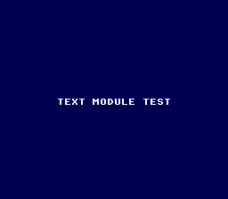

|
OpenSNES
Modern Open-Source SNES Development SDK
|
|
OpenSNES
Modern Open-Source SNES Development SDK
|
Family 1 — Text · rung 1.1 (the built-in font)
The gentlest program that still exercises the whole SNES rhythm — tiles, palette, VRAM and the VBlank handshake — on the smallest possible surface. It prints one string in white on a dark blue screen and idles. If text ever breaks, this is the simplest ROM that reveals it.

The SNES has no text hardware. Characters are background tiles: a font lives in VRAM as tiles, and a tilemap maps each screen cell to a tile index. The text module owns both — you just call textPrintAt. Mode 0 is used because the built-in font is 2bpp (4 colours), which is all monochrome text needs.
Then run print_string.sfc in luna (or any SNES emulator). You should see TEXT MODULE TEST in white on dark blue.
console, dma, text, background, sprite
→ 1.2 Load a custom font from a PNG · under the hood: how a glyph is 2bpp bitplanes + a tilemap → fundamentals/text_glyphs.